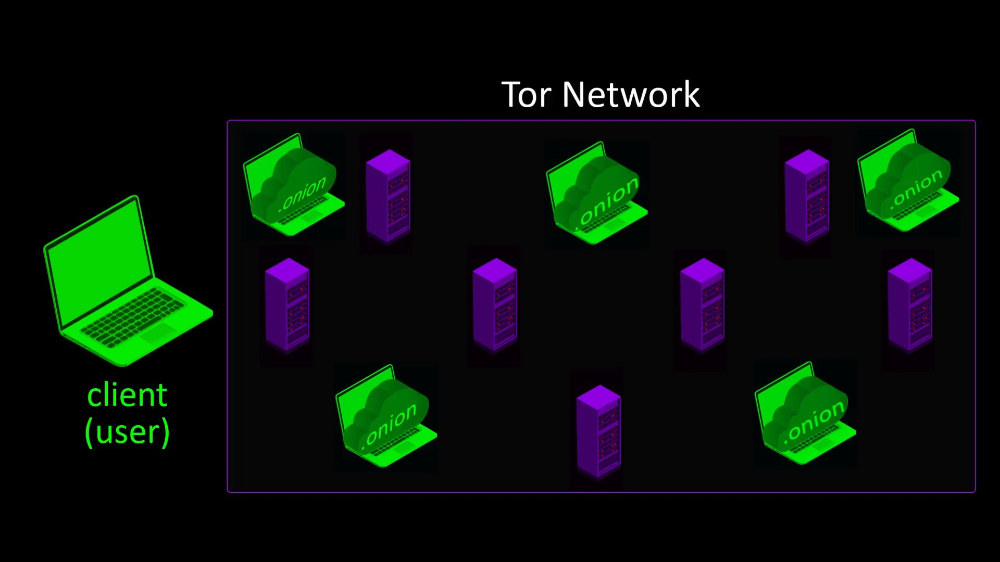
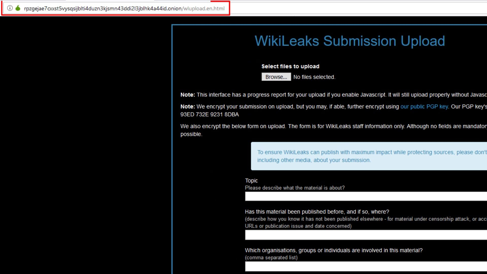
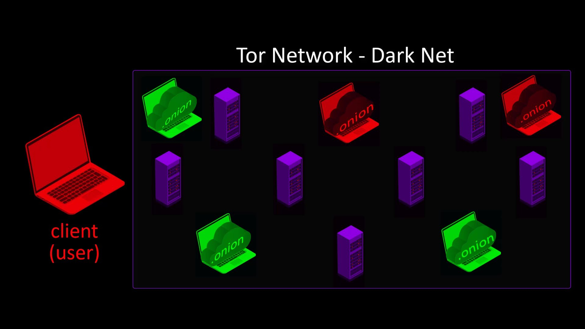

Tor Hidden Services - Dark Web
At the beginning of the course, we mentioned that there are Tor hidden services that can only be accessed over the Tor network, and the web space where these services are located is called "Dark Web".

In this section, we will be discussing how to access websites on the dark web.
If you have prejudice about this services because of the dark web name, investigating the reason Tor hidden services born may change your mind.
The main purpose of the Tor organization from the very beginning; to ensure that people can use their right to communicate and receive information against all forms of oppression and censorship restricting freedom.
Therefore, realizing that it won't be enough to provide security and freedom on the user side, Tor hidden services have been started to provide a secure publishing environment for publishers. Tor hidden services work within the Tor network and allow you to register an internal, Tor-only service that gets its own onion hostname. When visitors connect to the Tor network, Tor resolves those .onion addresses and directs you to the anonymous service sitting behind that name.


Thus, a free and highly secure publishing ecosystem has emerged for all publishers with restricted freedom, such as journalists under pressure.

When publishers want to publishing via the " Tor hidden service ", in other words, the " onion service ", they can publish the content they want anonymously without being dependent on any company for thing such as domain name registration.

You can even use your computer to host website files. In this way, you can freely publishing over the Tor network without having to share information with anyone for both domain name and host service.

As the clearest example of freely publishing, i can give example the Wikileaks documents moved over the " darknet ".

As the websites established with the Tor hidden service are located on the Tor network, namely on the " darknet ", your real ip address as a publisher is also hidden. In addition, since you don't register domain names with your credentials, no mechanism that wants to prevent your information sharing activities can directly interfere with you.By looking at the previous explanations, you may have noticed that " Tor network " can also be called " darknet ". This is due to the notoriety of the Tor project, which we mentioned earlier. In other words , by using the expression " Dark " instead of " Tor ", the phrase " Dark Net " can be used instead of " Tor Network ". Similarly, the web space that you can reach with standard browsers without connecting to the Tor network can be called " Clear Net ", that is, " Open-Clean Network ".

If at this point you have a question about whether it is legal to browse and publishing on onion services, that is, dark websites, my answer will be the same as using the Tor network.


However, as long as your activities using Tor are for your own personal information security, you will have no problems. Be aware that the concept called freedom is a concept that can be valid as long as it does not restrict the freedom of other people and risk lives. Otherwise, all the anonymity measures you take will only keep you anonym for a certain period of time.
As the clearest example of this, i can give the caught of the founder of Silkroad, which has been publishing on the dark web for many years and is the biggest illegal trade site of its time, as a result of meticulous work.
If you haven't watched it before, I strongly recommend you to watch the documentary "Deep Web" in order to learn more about this subject and gain awareness.